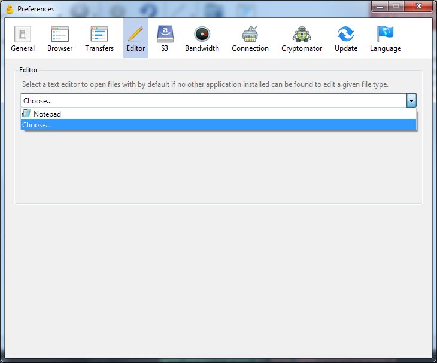

Developer tools and editing files¶
In this section we’ll take a look at some practicalities associated with web experiments in general, and CyberDuck and our server in particular.
Editing files directly¶
CyberDuck can allow you to edit files on the server directly. What it actually does is download a copy, and open it in your editing program. It then uploads the file automatically when it changes.
Open CyberDuck, and find the Preferences window with Edit → Preferences on Windows or CyberDuck → Preferences on Mac. Then click on “Editor” at the top. You should see this:
In the dropdown menu, choose your text editor. Check the box “Always use this application”.
If your text editor is not there, you’ll need to select “Choose ….” and find it. (You only need to do this if it’s not there – if your chosen text editor was in the list, you’ve finished).
Here are a couple of examples.
Atom can be quite difficult to find on Windows as it’s in a hidden folder. Go to the folder
C:\Users\<your username>\AppData\Local\atom
and choose the file called “atom”:

Notepad++ can be found in Program Files:

Now you can edit a file directly by selecting it and clicking on the “Edit” button in the toolbar.

Developer Tools¶
When writing any computer program, it’s always good to have some tools to help you find out what’s going on. This is particularly important when something goes wrong! For an online experiment in JavaScript, you can use the web developer tools in your browser. All recent versions of browsers have these tools built in.
First, here’s how to open developer tools for your browser:
- Firefox
In the menu, Web Developer → Toggle Tools (or Ctrl-Shift-I)
- Chrome
In the menu, More Tools → Developer Tools (or Ctrl-Shift-I)
- Internet Explorer/Edge
Press F12 to start Developer tools
- Safari
Preferences → Advanced and check “Show Develop menu in menu bar”. Then Develop → Show Web Inspector
In my examples I’ll use Firefox, but these are all fairly similar.
Go to the page for your experiment – use the link for the uploaded copy on the server, not the copy on your computer.
Now go to the web page for the example experiment you created last week. Enable Developer Tools (see the list above) and reload the page. You’ll see something like this:
The console¶
Click on the tab marked “Console”. This contains messages from your web browser. Most useful are the errors! Open your experiment.html file and break the code.
Yes, I’m actually telling you to break the code! The easiest way is to delete a bracket –
(,[or{, as if these are not in matching pairs that will cause an error.
Now reload the page. You should see something like this:

There’s an error reported in the console, in red. This will give you a clue as to where the problem is! You can click on the links on the right which will show you the relevant parts of the code. While error messages can be a little cryptic, there’s usually something which will help, like “missing }”.
Now fix your experiment!
The debugger¶
These tools can also allow you to step through the code line-by-line. Now click on the tab marked “Debugger” or “Sources”. You’ll see something like this:

Here you can see your code, and watch it run. Click in the margin next to the code, on the line:
jsPsych.init({
Now reload the page. The program has stopped on that line. The point that you chose by clicking in the margin is called a breakpoint.

On the right there’s a sidebar called “Scopes”. (This has other names in other browsers, but there should be a list of names and values somewhere). Here you’ll be able to see what value different variables have. Some of these are built in to the browser, or part of the internal workings of jsPsych – don’t worry about these for now.
The important thing to note is that you can see the value for the node (in the tutorial, this is called “hello_trial”). As you build up a more complex program there will be many such variables, and their values can change as the program runs, so it’s good to know that you can inspect this as the program runs.
You can also continue running the program. These tools, or something like them, will be near the code:

The first of these controls (the triangle or “play button”) lets the program continue running until it finishes, or until another breakpoint is reached. The second steps through the code gradually, one line at a time.
That concludes the introduction to Developer Tools. Don’t worry if you didn’t understand everything on the screen when it was running – the important thing is to know that it’s there to help you when your program isn’t working!

{kind=link}
{kind=link}